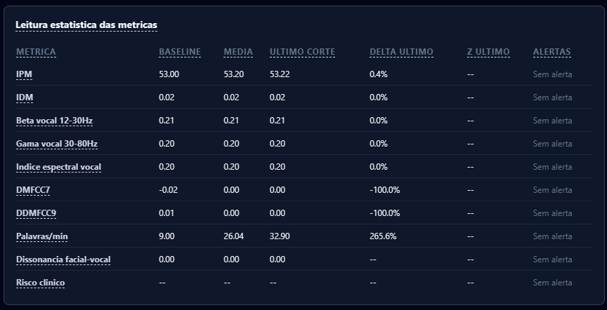

Prepare la sesión
Compruebe las autorizaciones; la cámara y el micrófono los habilita el navegador al abrir la sala. La referencia inicial es vocal, no una normalización individual del rostro.
FROID Psique
FROID Psique · Profesionales y clínicas
FROID organiza medidas vocales y movimientos faciales durante la sesión para su consulta y revisión. Un apoyo a la observación, sin exigir que el profesional convierta cada señal en una conclusión.
Compruebe las autorizaciones; la cámara y el micrófono los habilita el navegador al abrir la sala. La referencia inicial es vocal, no una normalización individual del rostro.
Las medidas vocales y los patrones faciales aparecen en canales distintos. La lectura actual se diferencia del historial; la falta de medida se declara.
Use los registros disponibles, la transcripción y sus propias anotaciones para revisitar la sesión. Confirme el contenido asistido por IA antes de incorporarlo a la evaluación.
Al final de la sesión, el informe reúne la lectura estadística de cada corte, con la línea de base como referencia.

Piense en un tablero de instrumentos: cada indicador describe una dimensión. La interpretación exige conocer el recorrido; aquí, la conversación, la historia y la evaluación del paciente.
IPM e IDM resumen desvíos acústicos. Siete familias describen configuraciones faciales compatibles, no sentimientos comprobados. FROID no mide la disonancia facial-vocal.
FROID Explica ayuda a discutir las medidas y los registros disponibles. Las preguntas listas ofrecen un punto de partida; los prompts propios permiten orientar la consulta al intervalo y al objetivo del análisis.
La propuesta del acervo es apoyar consultas agregadas y estudios sobre patrones, sujetos a la elegibilidad de los datos y a los controles de privacidad. El crecimiento de la base no sustituye la validación clínica.
El modelo V2 separa créditos de análisis y licencia organizacional. El autónomo utiliza créditos; las clínicas con equipo tienen una licencia dimensionada por profesionales clínicos activos. Consulte las condiciones antes de contratar.
Converse con el equipo sobre recursos, permisos, tratamiento de datos e implantación en su práctica.
Apoyo a la observación, no diagnóstico ni decisión terapéutica automatizada. Lea los límites.